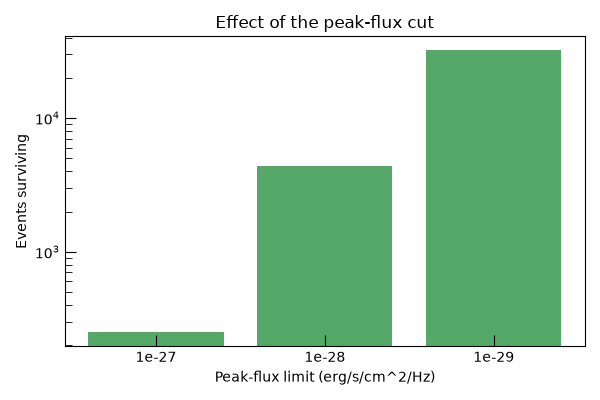

Note
Go to the end to download the full example code.
Cut: Peak Flux#
filter_by_peak_flux() is the same
evaluation as filter_by_peak_magnitude(),
just compared in flux (erg/s/cm^2/Hz) rather than AB magnitude, for a threshold already
in hand as a flux.
from m4opt.missions import uvex
from matplotlib import pyplot as plt
from uvex_transients.simulation.core import SurveySimulator
from uvex_transients.surveys import get_schedule
from uvex_transients.transients.supernovae import MagnetarSLSNe
from uvex_transients.utils.plotting import resolve_fig_axes, set_plot_style
set_plot_style()
schedule = get_schedule()
slsn = MagnetarSLSNe()
simulator = SurveySimulator(schedule, transients={"slsn": slsn}, simulation_seed=42)
TIME_BINS = 10
NSIDE = 32
DOWNSAMPLE = 50
catalog = simulator.generate_events(time_bins=TIME_BINS, nside=NSIDE, downsample=DOWNSAMPLE)
print(f"{len(catalog) * DOWNSAMPLE} events sampled.")
Generating events: 0%| | 0/10 [00:00<?, ?bin/s]
Generating events: 0%| | 0/10 [00:00<?, ?bin/s, bin=1/10, type=slsn]
Generating events: 10%|█ | 1/10 [00:10<01:35, 10.66s/bin, bin=1/10, type=slsn]
Generating events: 10%|█ | 1/10 [00:10<01:35, 10.66s/bin, bin=2/10, type=slsn]
Generating events: 20%|██ | 2/10 [00:11<00:36, 4.61s/bin, bin=2/10, type=slsn]
Generating events: 20%|██ | 2/10 [00:11<00:36, 4.61s/bin, bin=3/10, type=slsn]
Generating events: 30%|███ | 3/10 [00:11<00:18, 2.67s/bin, bin=3/10, type=slsn]
Generating events: 30%|███ | 3/10 [00:11<00:18, 2.67s/bin, bin=4/10, type=slsn]
Generating events: 40%|████ | 4/10 [00:11<00:10, 1.76s/bin, bin=4/10, type=slsn]
Generating events: 40%|████ | 4/10 [00:11<00:10, 1.76s/bin, bin=5/10, type=slsn]
Generating events: 50%|█████ | 5/10 [00:12<00:06, 1.25s/bin, bin=5/10, type=slsn]
Generating events: 50%|█████ | 5/10 [00:12<00:06, 1.25s/bin, bin=6/10, type=slsn]
Generating events: 60%|██████ | 6/10 [00:12<00:03, 1.06bin/s, bin=6/10, type=slsn]
Generating events: 60%|██████ | 6/10 [00:12<00:03, 1.06bin/s, bin=7/10, type=slsn]
Generating events: 70%|███████ | 7/10 [00:12<00:02, 1.37bin/s, bin=7/10, type=slsn]
Generating events: 70%|███████ | 7/10 [00:12<00:02, 1.37bin/s, bin=8/10, type=slsn]
Generating events: 80%|████████ | 8/10 [00:13<00:01, 1.71bin/s, bin=8/10, type=slsn]
Generating events: 80%|████████ | 8/10 [00:13<00:01, 1.71bin/s, bin=9/10, type=slsn]
Generating events: 90%|█████████ | 9/10 [00:13<00:00, 2.12bin/s, bin=9/10, type=slsn]
Generating events: 90%|█████████ | 9/10 [00:13<00:00, 2.12bin/s, bin=10/10, type=slsn]
Generating events: 100%|██████████| 10/10 [00:13<00:00, 2.66bin/s, bin=10/10, type=slsn]
Generating events: 100%|██████████| 10/10 [00:13<00:00, 1.34s/bin, bin=10/10, type=slsn]
169050 events sampled.
Comparing peak-flux limits#
min_flux keeps only events whose peak observed flux clears a threshold, in erg/s/cm^2/Hz.
min_fluxes = [1e-27, 1e-28, 1e-29]
counts = []
for min_flux in min_fluxes:
bright = simulator.filter_by_peak_flux(catalog, uvex, min_flux=min_flux)
counts.append(len(bright) * DOWNSAMPLE)
print(f"min_flux={min_flux:.0e}: {len(bright) * DOWNSAMPLE} events clear it.")
Evaluating peak band flux: 0%| | 0/1 [00:00<?, ?chunk/s]
Evaluating peak band flux: 0%| | 0/1 [00:00<?, ?chunk/s, chunk=1/1, type=slsn]/home/runner/work/uvex-transients/uvex-transients/uvex_transients/models/core/base.py:2603: RuntimeWarning: divide by zero encountered in log
return np.log(numerator / denominator)
Evaluating peak band flux: 100%|██████████| 1/1 [00:02<00:00, 2.83s/chunk, chunk=1/1, type=slsn]
Evaluating peak band flux: 100%|██████████| 1/1 [00:02<00:00, 2.83s/chunk, chunk=1/1, type=slsn]
min_flux=1e-27: 250 events clear it.
Evaluating peak band flux: 0%| | 0/1 [00:00<?, ?chunk/s]
Evaluating peak band flux: 0%| | 0/1 [00:00<?, ?chunk/s, chunk=1/1, type=slsn]
Evaluating peak band flux: 100%|██████████| 1/1 [00:02<00:00, 2.65s/chunk, chunk=1/1, type=slsn]
Evaluating peak band flux: 100%|██████████| 1/1 [00:02<00:00, 2.65s/chunk, chunk=1/1, type=slsn]
min_flux=1e-28: 4400 events clear it.
Evaluating peak band flux: 0%| | 0/1 [00:00<?, ?chunk/s]
Evaluating peak band flux: 0%| | 0/1 [00:00<?, ?chunk/s, chunk=1/1, type=slsn]
Evaluating peak band flux: 100%|██████████| 1/1 [00:02<00:00, 2.84s/chunk, chunk=1/1, type=slsn]
Evaluating peak band flux: 100%|██████████| 1/1 [00:02<00:00, 2.84s/chunk, chunk=1/1, type=slsn]
min_flux=1e-29: 32050 events clear it.
The falling survival count#
fig, ax = resolve_fig_axes(fig_size=(6, 4))
ax.bar([f"{f:.0e}" for f in min_fluxes], counts, color="#55A868")
ax.set_yscale("log")
ax.set_xlabel("Peak-flux limit (erg/s/cm^2/Hz)")
ax.set_ylabel("Events surviving")
ax.set_title("Effect of the peak-flux cut")
fig.tight_layout()
plt.show()

Total running time of the script: (0 minutes 23.081 seconds)